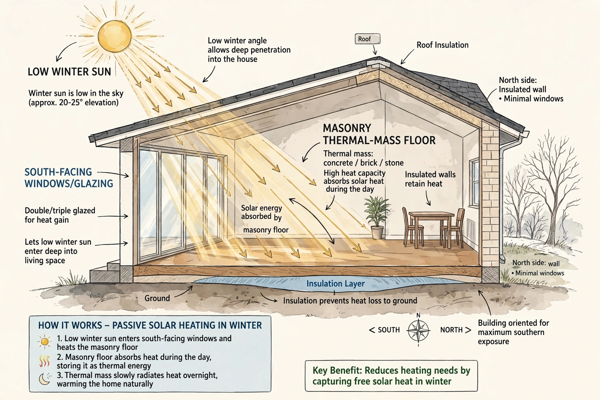

Passive solar building design
| Passive solar design | |
| Field | Sustainable architecture |
|---|---|
| Key elements | Orientation, glazing, thermal mass, shading, insulation |

In passive solar building design, windows, walls and floors are designed to collect, store and distribute solar energy as heat in winter and reject it in summer, without mechanical or electrical devices. It is one of the oldest strategies of climate-responsive architecture and a foundation of modern green building.
Design elements
Key elements include orienting the building's long axis east–west with the main glazing facing the equator; sizing south-facing windows (in the northern hemisphere) to admit low winter sun; shading them with overhangs against high summer sun; using thermal mass such as masonry floors to store heat by day and release it at night; and insulating the envelope to keep the collected heat inside. The direct-gain, indirect-gain (Trombe wall) and isolated-gain (sunspace) systems are the classic configurations.
History
Socrates is said to have taught how houses might catch the winter sun; the Ancestral Puebloans built cliff dwellings oriented to the solar cycle. Modern passive solar design crystallised in the 1970s energy crisis and underlies the later Passive House standard.
See also: Solar gain, Thermal mass.